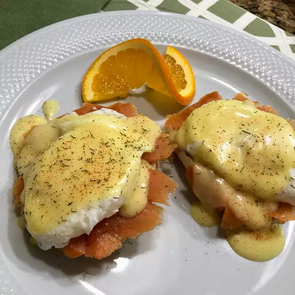

Return Home

This is the perfect special breakfast for two. I hope you enjoy it as much as we do
This recipe for hollandaise sauce is so simple to make and always turns out perfectly.
You can always substitute bagels for the English muffins, if you prefer.
Ingredients
2 egg yolks
1 & 3/4 tablespoons lemon juice
1 teaspoon Dijon mustard
1/2 teaspoon white sugar
1/16 teaspoon Worcestershire sauce
1 pinch salt
1 pinch ground black pepper
1/2 cup butter, melted
1/2 teaspoon distilled white vinegar
4 eggs
2 English muffins, split
1 tablespoon butter
4 ounces smoked salmon, thinly sliced
Steps
Fill the bottom of a double boiler partway with water. Make sure the water does not touch the top pan. Bring to a gentle simmer. Whisk egg yolks, lemon juice, mustard, sugar, Worcestershire sauce, salt, and pepper together in the top of the double boiler. Add melted butter 1 or 2 tablespoons at a time, whisking constantly until fully combined. Remove from heat and cover the Hollandaise.
Fill a large saucepan with 3 inches of water and bring to a gentle simmer. Add vinegar. Crack an egg into a small bowl then gently slip egg into the simmering water, holding the bowl just above the surface of water. Repeat with remaining eggs. Cook eggs until the whites are firm and the yolks have thickened but still soft in the centers, 2 1/2 to 3 minutes.
Remove the eggs from the water with a slotted spoon, dab on a kitchen towel to remove excess water, and place onto a warm plate.
Toast and butter the English muffins. Divide between two plates and top with smoked salmon. Place the poached eggs on top and cover with the Hollandaise sauce.
Nutrition Facts
Per Serving: 858 calories; protein 30.6g; carbohydrates 29.1g; fat 69.6g; cholesterol 727.1mg; sodium 1295mg.